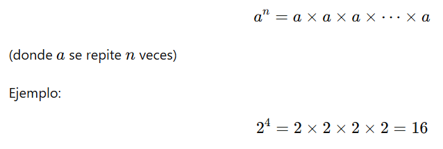
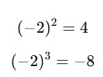
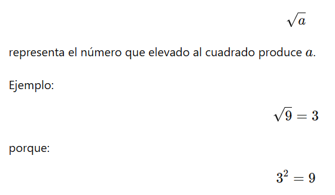
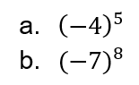

8°
EXPLORACIÓN
Situación inicial: ¿Siempre da lo mismo?
Observa con atención las siguientes operaciones.
No realices cálculos largos todavía.
Lo más importante es lo que piensas que puede ocurrir.
1) ¿Cambia el resultado?
Compara mentalmente:
a) 3 × 4
b) 4 × 3
c) (2 × 5) × 3
d) 2 × (5 × 3)
Responde en tu cuaderno:
★ 1. ¿Crees que el resultado será el mismo en cada pareja?
★ 2. Explica por qué piensas eso.
3. ¿En qué casos te sientes completamente seguro y en cuáles no tanto?
2) Cuando aparecen signos
Observa ahora:
a) 3 × (−2)
b) (−3) × 2
c) (−3) × (−2)
Responde:
★ 1. ¿Qué crees que ocurre con el signo del resultado en cada caso?
★ 2. ¿Por qué crees que pasa eso?
3. Explica tu razonamiento usando la recta numérica.
3) Potencias que parecen repetición
Observa:
a) 2 × 2
b) 2 × 2 × 2
c) 2 × 2 × 2 × 2
- ¿Qué patrón observas?
- ¿Cómo podrías escribir estas multiplicaciones de forma más corta?
- ¿Qué significa el número pequeño que aparece arriba cuando escribimos algo como 2³?
4) Una situación contextual
En una jornada ambiental del colegio (PRAE), cada curso sembró 3 filas de 8 árboles.
- ¿Cuántos árboles sembró un curso?
- Si participaron 4 cursos, ¿cómo representarías el total sin hacer todas las sumas una por una?
- ¿Existe más de una forma de representarlo?
Explica tu respuesta.
ANALIZA
1) ¿Importa el orden?
Observa las siguientes expresiones:
a) 5 × 7
b) 7 × 5
c) (4 × 6) × 2
d) 4 × (6 × 2)
★ 1. Calcula cada expresión.
★ 2. Compara los resultados.
3. ¿Qué parece ocurrir cuando cambias el orden o la agrupación?
4. ¿Crees que eso sucede siempre o solo en algunos casos? Explica.
2) Cuando intervienen números negativos
Analiza:
a) 4 × (−3)
b) (−4) × 3
c) (−4) × (−3)
- Calcula cada resultado.
- Observa el signo final en cada caso.
- Describe con tus palabras qué ocurre cuando multiplicas:
- un número positivo por uno negativo,
- dos números negativos.
No escribas una regla memorizada.
Explica lo que entiendes que está pasando.
3) Multiplicar por 1 y por 0
Observa:
a) 7 × 1
b) 7 × 0
c) (−5) × 1
d) (−5) × 0
★ 1. Calcula cada resultado.
★ 2. ¿Qué patrón observas?
3. ¿Por qué crees que ocurre eso?
4) Analizo una afirmación
Un estudiante dice:
“Multiplicar siempre hace que el número aumente.”
Responde:
★ a) ¿La afirmación es correcta o incorrecta?
b) Escribe al menos dos ejemplos que apoyen tu respuesta.
c) Explica en qué situaciones multiplicar puede hacer que el resultado sea menor.
5) Potencias: observo regularidades
Calcula:
a) 2²
b) 2³
c) 2⁴
★ 1. ¿Qué relación encuentras entre el exponente y la cantidad de veces que aparece el número?
2. ¿Qué crees que significa elevar un número al cuadrado?
3. ¿Qué diferencia observas entre 2³ y 3²?
CONOCE ALGO NUEVO
Hasta ahora has observado patrones en la multiplicación, el comportamiento de los signos y la repetición en las potencias.
Ahora vamos a organizar esas ideas con lenguaje matemático más preciso.
1) Propiedades de la multiplicación en los números reales
En el conjunto de los números reales (ℝ), la multiplicación cumple propiedades que permiten simplificar cálculos y justificar procedimientos.
🔹 Propiedad conmutativa
Para cualesquiera números reales a y b:
a × b = b × a
Ejemplo:
3 × 4 = 4 × 3 = 12
🔹 Propiedad asociativa
Para cualesquiera números reales a, b, c:
(a × b) × c = a × (b × c)
Esto significa que la forma de agrupar los factores no cambia el resultado.
Ejemplo:
(2 × 5) × 3 = 2 × (5 × 3)
🔹 Elemento neutro multiplicativo
Existe un número real que no cambia el valor cuando multiplica a otro número. Ese número es 1.
a × 1 = a
Ejemplo:
7 × 1 = 7
🔹 Elemento absorbente
Existe un número real que convierte cualquier número en 0 cuando se multiplica por él. Ese número es 0.
a × 0 = 0
Ejemplo:
(−5) × 0 = 0
2) Multiplicación y signos
En los números reales se cumple:
- Positivo × Positivo = Positivo
- Positivo × Negativo = Negativo
- Negativo × Positivo = Negativo
- Negativo × Negativo = Positivo
Esta regularidad permite explicar por qué:
(−3) × (−2) = 6
Se justifica para mantener coherencia con las propiedades de la multiplicación y el comportamiento en la recta numérica.
![imagen educativa tipo infografía para estudiantes de grado octavo que explique visualmente la multiplicación de números enteros con signos en la recta numérica. La imagen debe incluir: Un título en la parte superior que diga: “Multiplicación de números enteros y comportamiento de los signos” Tres casos claramente separados, organizados verticalmente: CASO 1: 3 × (−2) Dibujar una recta numérica horizontal desde −7 hasta 3. Marcar el 0 claramente. Mostrar tres saltos de tamaño −2 hacia la izquierda. Flechas en color rojo. Marcar el punto final en −6 con un punto verde destacado. Escribir debajo: 3 × (−2) = −6 CASO 2: (−3) × 2 Recta numérica similar. Mostrar tres saltos de tamaño +2 pero indicando que el número de saltos es negativo (puede representarse como inversión de dirección). Flechas en color naranja. Punto final en −6. Escribir debajo: (−3) × 2 = −6 CASO 3: (−3) × (−2) Recta numérica horizontal. Mostrar tres saltos de tamaño −2 pero invertidos en dirección para representar doble negativo. Flechas en color azul. Punto final en +6. Escribir debajo: (−3) × (−2) = 6 Requisitos de diseño: Fondo blanco. Líneas negras finas para la recta. Números claramente legibles. Flechas gruesas y visibles. Colores distintos para cada caso. Estilo limpio, didáctico, sin caricaturas. No incluir texto explicativo largo. Mantener formato académico. Resolución alta, orientación horizontal.](content/resources/20260218093507106UZP/3-4.png "Crea una imagen educativa tipo infografía para estudiantes de grado octavo que explique visualmente la multiplicación de números enteros con signos en la recta numérica.")
3) Potenciación en los números reales
La potenciación es una forma abreviada de escribir multiplicaciones repetidas.

🔹 Potencias con base negativa
Cuando la base es negativa, el resultado depende del exponente:
- Si el exponente es par → el resultado es positivo.
- Si el exponente es impar → el resultado es negativo.
Ejemplos:

4) Radicación
La radicación es la operación inversa de la potenciación.

En los números reales:
- La raíz cuadrada de un número positivo es un número real positivo.
- La raíz cuadrada de un número negativo no es un número real.
5) Conexión estructural
En ℝ:
- La multiplicación tiene propiedades que garantizan coherencia.
- La potenciación es multiplicación repetida.
- La radicación deshace la potenciación.
- Los signos siguen un patrón consistente.
Estas ideas permiten simplificar cálculos y resolver problemas con mayor seguridad.
ACTIVIDADES DE APRENDIZAJE
Las siguientes actividades están organizadas por niveles.
🔹 ACTIVIDAD 1. Uso propiedades con intención
★ Nivel esencial
1. Calcula usando la propiedad conmutativa:
a) 7 × 4
b) 9 × (−3)
c) (−5) × 6
Explica en cada caso cómo utilizaste la propiedad.
2. Calcula usando la propiedad asociativa:
a) (2 × 3) × 5
b) 2 × (3 × 5)
¿Obtuviste el mismo resultado? Justifica.
Nivel intermedio
3. Simplifica mentalmente usando propiedades:
a) 25 × 4
b) 125 × 8
c) 16 × 25
Explica qué estrategia usaste.
Nivel de profundización
Si terminas antes:
4. Justifica con un ejemplo numérico por qué la propiedad asociativa no cambia el resultado.
![infografía educativa clara y académica para estudiantes de grado octavo titulada: “Signo del producto según la cantidad de factores negativos” La imagen debe incluir: Fondo blanco. Diseño limpio, estilo libro de matemáticas. Tabla central con tres columnas: Columna 1: Cantidad de factores negativos Columna 2: Ejemplo Columna 3: Signo del resultado Incluir las siguientes filas: 1 negativo | (-3) × 4 | Negativo 2 negativos | (-3) × (-2) | Positivo 3 negativos | (-3) × (-2) × (-5) | Negativo 4 negativos | (-3) × (-2) × (-5) × (-1) | Positivo Debajo de la tabla incluir una frase breve: “Si la cantidad de factores negativos es par, el resultado es positivo. Si es impar, el resultado es negativo.” Diseño sobrio, colores suaves (azul y gris), tipografía clara, sin caricaturas. Resolución horizontal alta calidad.](content/resources/20260218093507106UZP/3-6.png "infografía educativa clara y académica para estudiantes de grado octavo titulada: “Signo del producto según la cantidad de factores negativos”")
🔹 ACTIVIDAD 2. Multiplicación y signos
★ Nivel esencial
1. Calcula:
a) (−4) × 3
b) 5 × (−2)
c) (−6) × (−3)
d) (−8) × 0
2. Explica con palabras qué ocurre con el signo en cada caso.
Nivel intermedio
Determina el signo del resultado sin hacer la multiplicación completa:
a) (−3) × (−2) × 4
b) (−5) × 2 × (−1)
c) 7 × (−3) × (−2)
Explica tu razonamiento.
Nivel de profundización
4. Analiza la afirmación:
“Si hay un número par de factores negativos, el resultado es positivo.”
¿Siempre es verdadera? Justifica.
![infografía matemática clara y minimalista para estudiantes de grado octavo titulada: “Potencias con base negativa” La imagen debe incluir: Fondo blanco. Rectángulo central con una tabla organizada en tres columnas: Columna 1: Exponente Columna 2: Expresión Columna 3: Resultado Filas: 1 | (-2)^1 | -2 2 | (-2)^2 | 4 3 | (-2)^3 | -8 4 | (-2)^4 | 16 5 | (-2)^5 | -32 Debajo de la tabla incluir un recuadro de conclusión: “Si el exponente es par, el resultado es positivo. Si el exponente es impar, el resultado es negativo.” Agregar pequeño recordatorio visual: -2^2 ≠ (-2)^2 Diseño académico, colores azul oscuro y verde, líneas finas, estilo didáctico formal. Resolución horizontal alta calidad.](content/resources/20260218093507106UZP/3-7.png "Crea una infografía matemática clara y minimalista para estudiantes de grado octavo titulada: “Potencias con base negativa”")
🔹 ACTIVIDAD 3. Potenciación
★ Nivel esencial
1. Calcula:
a) 3²
b) 4³
c) (−2)²
d) (−2)³
2. Explica la diferencia entre:
−2²
(−2)²
Nivel intermedio
3. Simplifica:
a) 2³ × 2²
b) 5² × 5
c) (−3)² × (−3)
Explica qué patrón observas.
Nivel de profundización
4. Sin calcular completamente, determina el signo de:

Justifica usando el exponente.
🔹 ACTIVIDAD 4. Radicación
★ Nivel esencial
1. Calcula:
a) √16
b) √25
c) √81
2. Explica por qué √(−9) no es un número real.
Nivel intermedio
3. Determina:
a) √49
b) √(4²)
c) √(3²)
¿Qué relación encuentras entre potencia y raíz?
Nivel de profundización
4. Analiza:
¿Es cierto que √a² = a para todo número real a?
Justifica con ejemplos positivos y negativos.
🔹 ACTIVIDAD 5. Aplicación contextual
En una campaña ambiental del colegio:
Cada grupo sembró 4 filas con 6 árboles cada una.
Participaron 5 grupos.
★ Nivel esencial
1. Representa la situación usando multiplicación.
2. Calcula el total de árboles sembrados.
Nivel intermedio
3. Si cada árbol costó 3² pesos, ¿cuánto se invirtió en total?
Nivel de profundización
4. Si uno de los grupos perdió 6 árboles (representado como −6), ¿cómo modelarías matemáticamente el nuevo total?
🔹 ACTIVIDAD 6. Explico y justifico
★ Nivel esencial
1. Explica con tus palabras:
- Qué significa elevar un número al cuadrado.
- Qué significa que 0 sea elemento absorbente.
Nivel intermedio
2. Da un ejemplo donde multiplicar haga que el número disminuya.
Nivel de profundización
3. Construye una operación que combine:
- multiplicación,
- potencia,
- números negativos,
y explica el procedimiento paso a paso.
Referencias bibliográficas
Ministerio de Educación Nacional. (2006). Estándares básicos de competencias en matemáticas. Bogotá, Colombia: MEN.
Ministerio de Educación Nacional. (2016). Derechos básicos de aprendizaje en matemáticas: Básica secundaria. Bogotá, Colombia: MEN.
Ministerio de Educación Nacional. (2017). Mallas de aprendizaje en matemáticas. Bogotá, Colombia: MEN.
Ministerio de Educación Nacional. (2017). Vamos a aprender Matemáticas 8°: Libro del estudiante. Bogotá, D.C., Colombia: Ediciones SM, S.A.
Ministerio de Educación Nacional. (1998). Lineamientos curriculares en matemáticas. Bogotá, Colombia: MEN.
GeoGebra GmbH. (2024). Recursos interactivos para la enseñanza de las matemáticas. Recuperado de https://www.geogebra.org